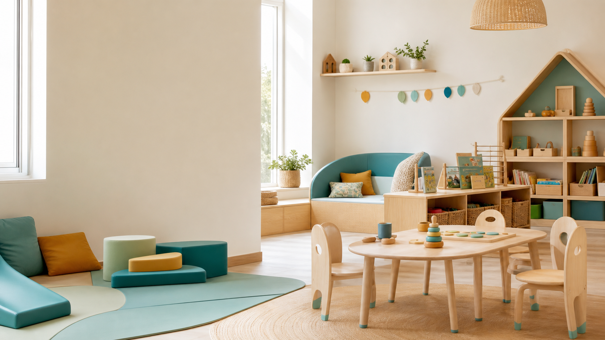

Creche familiale et professionnelle
Aux Premiers Pas
Un lieu d'accueil rassurant pour accompagner chaque enfant dans ses premieres decouvertes, avec une equipe attentive, des espaces doux et un rythme respecte.
Notre approche
Grandir en confiance, pas a pas.
Aux Premiers Pas accueille les jeunes enfants dans un cadre calme, securisant et stimulant. Le projet pedagogique encourage l'autonomie, la motricite libre, le langage, la socialisation et le respect du rythme individuel.
Chaque famille beneficie d'un dialogue simple avec l'equipe : adaptation progressive, transmissions claires et suivi regulier des besoins de l'enfant.
Bienveillance
Une presence douce, des reperes stables et des adultes disponibles.
Eveil
Ateliers sensoriels, lecture, jeux libres et exploration du monde.
Autonomie
Des espaces adaptes pour essayer, choisir, ranger et progresser.
Accueil de l'enfant
Une journee structuree, souple et rassurante.
Accueil individualise
Arrivee progressive, echange avec les parents et installation en douceur.
Temps d'eveil
Motricite, manipulation, musique, histoires et jeux libres.
Repas et repos
Accompagnement calme, hygiene, repas puis sieste selon le rythme de chacun.
Retrouvailles
Gouter, jeux calmes et transmissions de la journee aux familles.
Espaces
Des lieux penses pour les tout-petits.
Salle d'eveil
Jeux libres, coins lecture, materiel sensoriel et modules de motricite.
Espace repos
Ambiance calme, couchage adapte et respect des besoins de sommeil.
Coin repas
Repas encadres, apprentissage des gestes simples et convivialite.
Exterieur
Sorties et jeux dehors lorsque la meteo le permet.
Tarifs
Des formules lisibles pour les familles.
Les montants ci-dessous sont des forfaits fixes de presentation. Le contrat final peut etre ajuste selon le rythme d'accueil et les besoins de la famille.
Matin ou apres-midi, collation incluse.
Accueil complet, repas, sieste et transmissions.
Forfait regulier du lundi au vendredi.
Contact
Parlons de votre besoin d'accueil.
Telephone01 23 45 67 89
Emailcontact@auxpremierspas.fr
Adresse12 rue des Petits Pas, 75000 Paris